Catalogue
Accessoires & intégration
Modules d’intégration, alimentations, boîtiers et accessoires de pose pour compléter et raccorder votre installation.

61 références


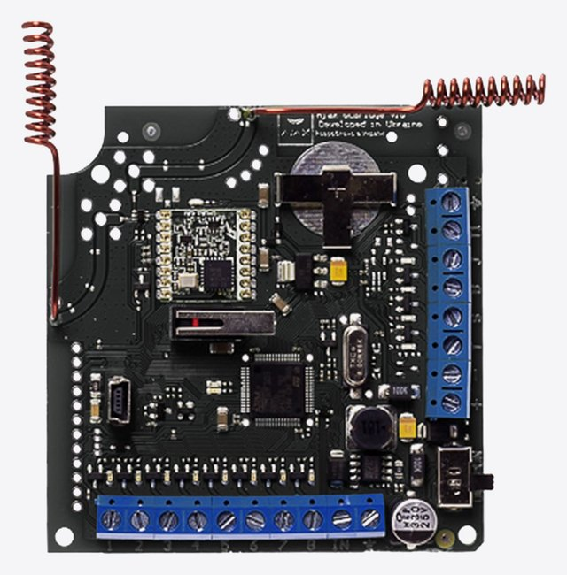


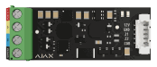


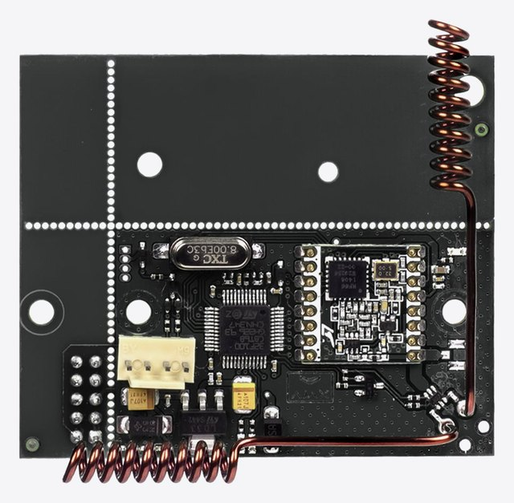


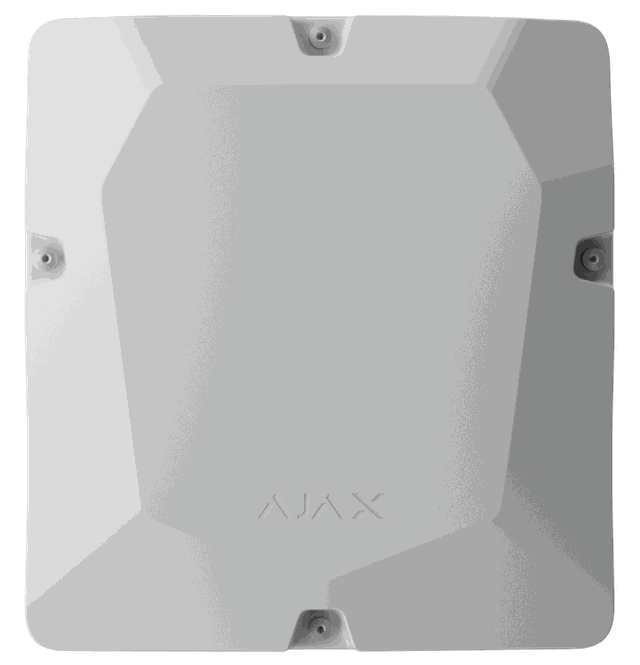


Visuel officiel non disponible


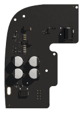
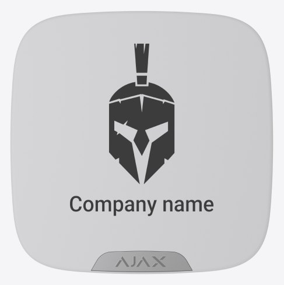
![Bypass (Dimmer) [55]](assets/img/p/bypass-dimmer-55-212.webp)
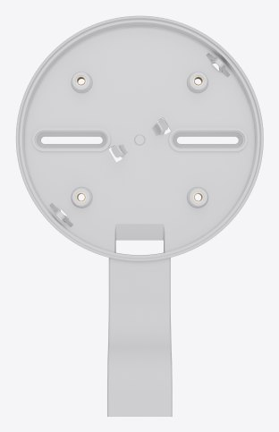

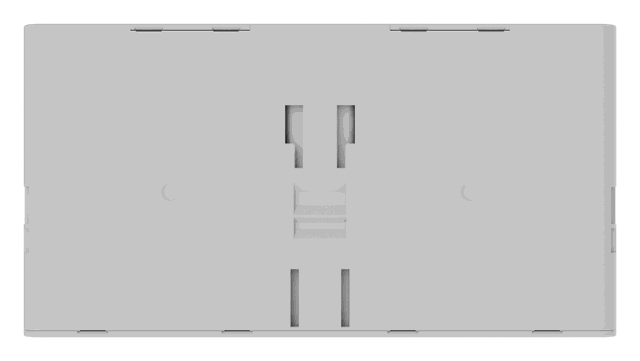


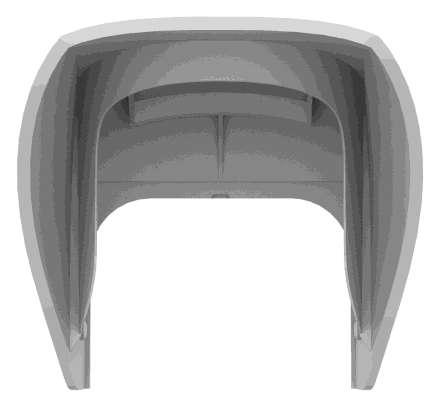


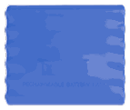
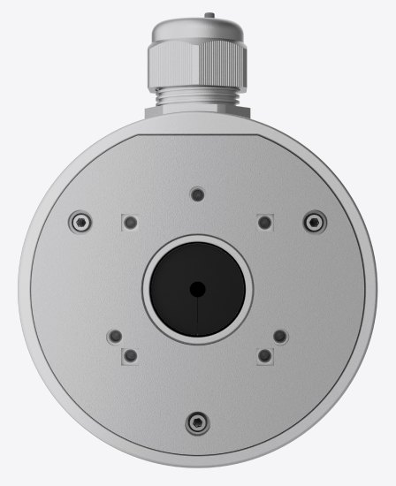
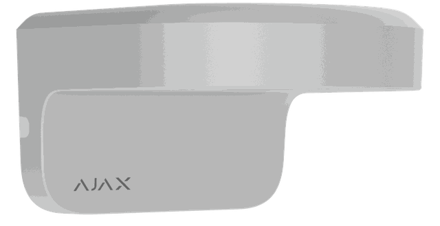

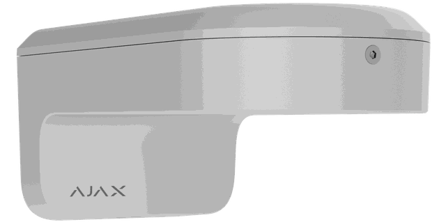


![SurfaceBox [55]](assets/img/p/c-surface-box-white-38fec161ee-494.webp)


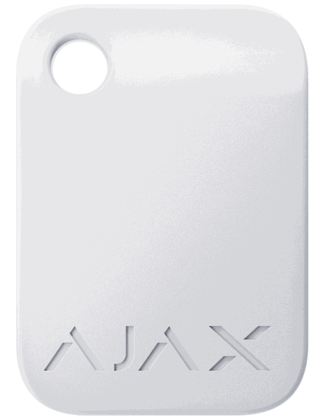
Aucune référence ne correspond à ces critères.
Besoin d’aide pour composer votre système ?
Étude gratuite · Partenaire agréé · Toute l’île · Intervention sur site.